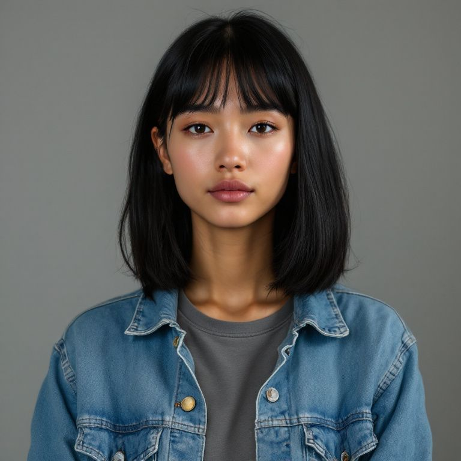
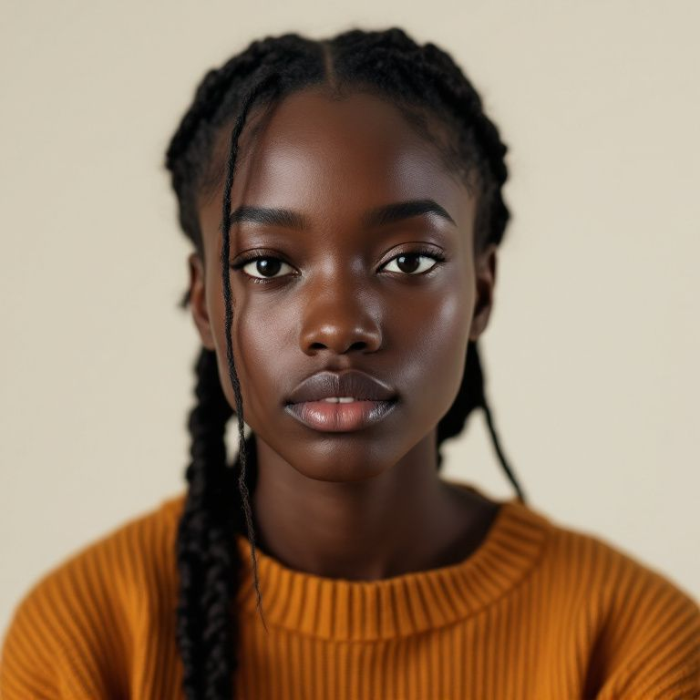

Casey OkaforField notes · 8:12Swapped the morning stand-up for a written round. Nobody misses the meeting yet.
Experiment Team
Ari SolbergShipping · 9:47The export queue cleared overnight. Documenting what changed before we forget.
InfraWho owns the welcome sequence copy now? It still says we are in beta.
Copy Loose end